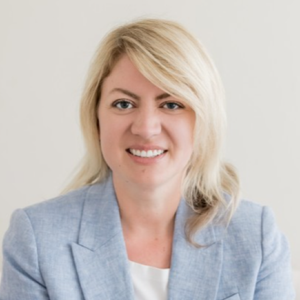

Brave Health
Brave Health is a virtual behavioral healthcare provider operating in a high-volume, margin-sensitive environment
Reversed a $4 revenue-per-appointment drop and set a new baseline $3 above where it started, a $7 swing worth ~$1M in annual revenue, all in 8 weeks.
The challenge: Revenue per appointment had declined, the root causes were unclear, and pressure to reverse the trend was mounting. The issues crossed finance, clinical operations, and technology, with no single team positioned to solve them independently.
The approach: Jonathan established a cross-functional response team, aligned stakeholders around a shared financial metric, and introduced a structured process to identify root causes, test interventions, and rapidly implement improvements.

“Jonathan helped Brave navigate an incredibly high-stakes technical integration, and from day one, I knew we were going to be OK. It ended up being the most successful integration in Brave's history. But beyond that, Jonathan gave me tools and frameworks for thinking about our business that I still use today.”Sarah Tilton, CEO at Brave Health
Octave
Physical and virtual therapy and therapist matching.
Octave set a goal of 3x delivery velocity. An org change that paved the way for AI, plus a repeatable delivery process, has velocity up 2x and growing.
The challenge: Octave set a goal of 3x velocity, with no clear path to get there and no way to measure it.
The approach: Jonathan's assessment identified several areas of improvement to prepare the team for AI. They started with a reorg that aligned the team along business units, which alone accounts for a significant share of the speedup. He also introduced a repeatable monthly process (t-shirt-sized projects, tracked as completed project points per team member) and handed it off to the existing team to run.
“Jonathan walks in with total clarity and no jargon. He tells you the three things that need to happen, and why. He earns the product and dev team’s trust fast, so he works right alongside them and pushes back when something doesn’t add up. Most of all, he’s a translator. He turns a technical team’s work into KPIs leadership can actually manage, holds the team to them, and hands it back to us in a form we can run.”Pooja Agarwal, COO at Octave